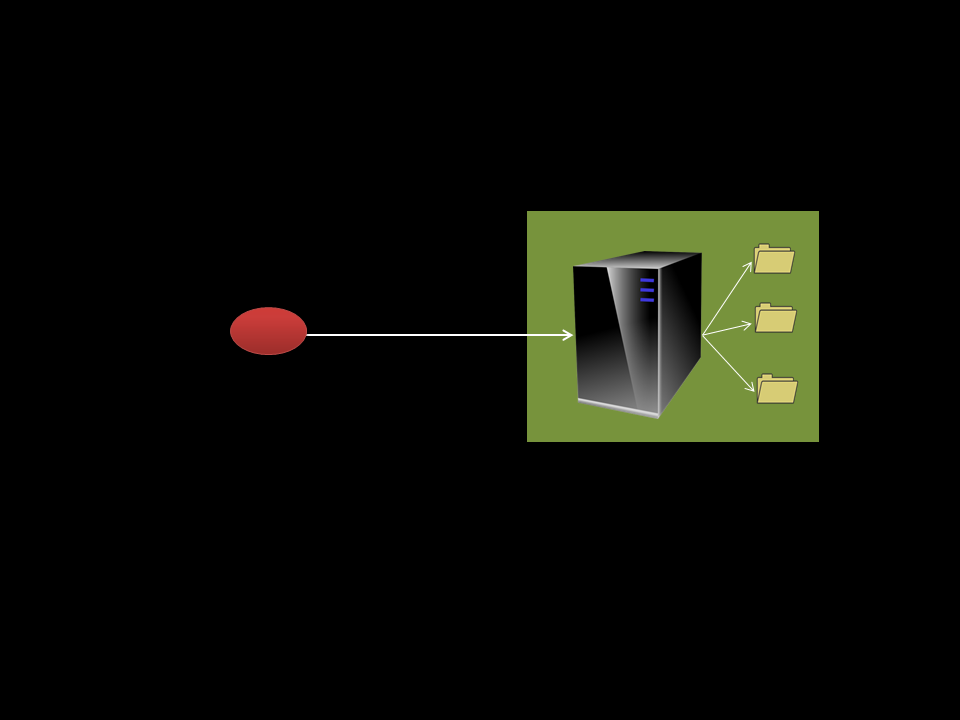
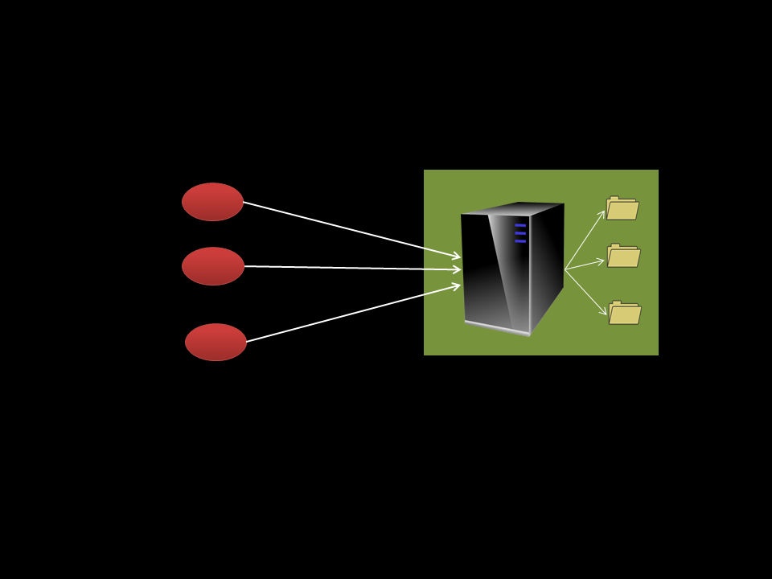
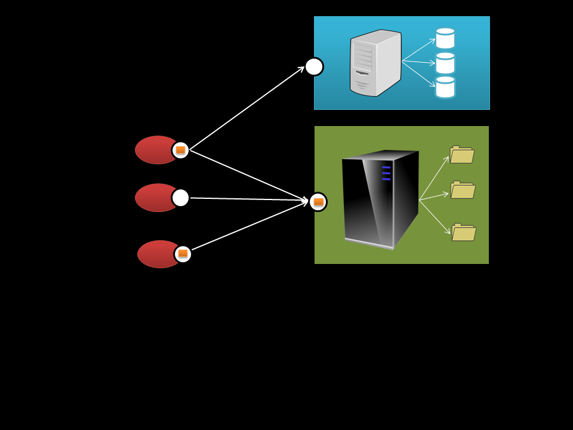
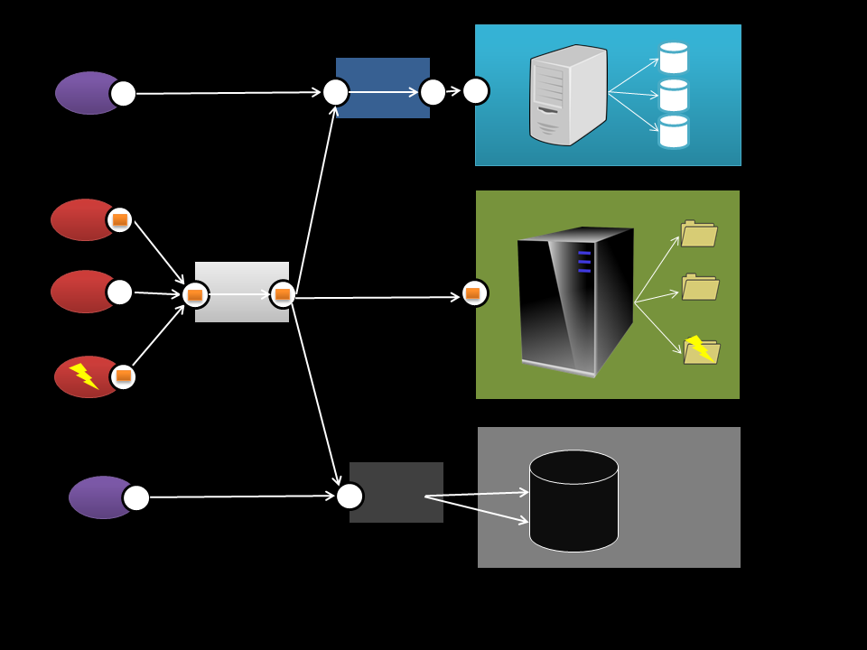

Created by Flavia Sequeira, Dev Engineer, ING Netherlands (@flaviavanharten)
myth 1
fact 1
myth 2
fact 2
myth 3
fact 3
any guesses...fact 3
Starting point. No constraints
Add separation of concerns
improves UI portability
simplifies server
enables multiple organizational units
Constrain interaction to be stateless
simplifies server
improves scalability
improves reliability
degrades efficiency
Add non-shared caching
reduces average latency
improves efficiency
improves scalability
degrades reliability
Generalise
improves visibility
independent evolution
decouples implementation
degrades efficiency
Apply information hiding
simplifies clients
shared caching
improves scalability
legacy encapsulation
load balancing
adds latency
Allow code on demand (applets/js)
simplifies clients
improves extensibility
reduces visibility
constraint
Identification of resources
Manipulation through representations & self descriptive messages
Hypertext as the engine of application state (HATEOAS) / Hypermedia
identify business/domain/journey objects as resources
use URLs to reach resources; a resource can be reached via multiple URLs
representations are transferred between client and server
use HTTP verbs: GET, PUT, POST, DELETE
use HTTP status codes: 1xx, 2xx, 3xx, 4xx, 5xx
use HTTP content negotiation: application/json, application/xml
| Resource | GET | PUT | POST | DELETE |
|---|---|---|---|---|
| Collection URL http://www.tb.nl/orders |
Return the collection of orders with possibly some of the properties of each collection item | Replace the collection with another collection | Create and add a new order to the collection | Delete the entire collection of orders |
| Element URL http://www.tb.nl/orders/1000 |
Return the order with id 1000 | Replace the order with id 1000 with another order | Delete order with id 1000 |
100 Continue200 OK301: Moved Permanently400 Bad Request401 Unauthorized403 Forbidden404 Not Found500 Internal Server ErrorHypertext as the engine of application state
...this earns REST a place among the cool guys!Here come the questions...
question 1
question 2
question 3
Thank you
...graceful bow